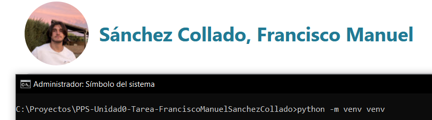
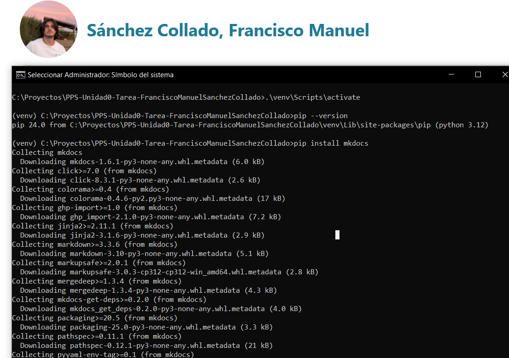
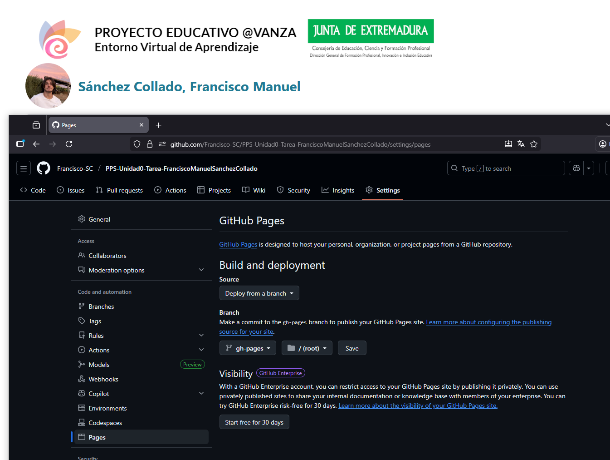
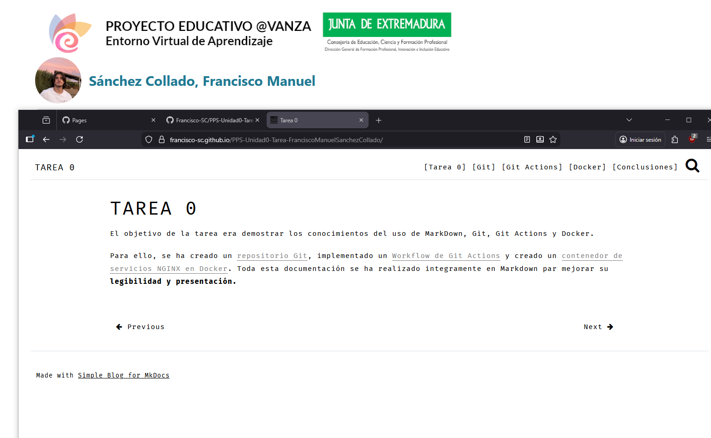

Git Actions
Para la creación de un flujo de trabajo en Git, primero configuraremos MKDocs, una herramienta para la generación automática de documentación, generando archivos HTML, CSS y JavaScript desde archivo de MarkDown.
Creación de MKDocs
Para la conversión de los archivos mediante MKDocs, se debe crear un archivo de configuración mkdocs.yml, en el que se pueden configurar varios parámetros:
- site_name: nombre con el que aparecerá la página generada
- nav: menú de navegación de la página, compuesto por los distintos archivos de documentación MarkDown
- doc_dir: directorio en el que se almacenan los archivos de documentación
- theme: en este caso, se ha usado el tema simple-blog
Descarga del tema local
Como pequeño inciso, se describirán los pasos realizados para la importación del tema simple-blog.
-
Prerrequisitos:
- Python instalado, preferiblemente Python 3 (yo he usado la versión 3.12)
- Los comandos que he empleado son para Windows 10
-
Instalación del tema:
Para la instalación del tema, se deberá crear un entorno virtual en la carpeta del proyecto:

Una vez instalado, lo activamos:

- Configuración del tema:
Una vez instalado, añadimos la línea de configuración pertinente al mkdocs.yml:
theme:
name: simple-blog
Configuración del workflow
Dentro del directorio .github creamos un directorio nuevo llamado "workflows" y dentro de este, un archivo de configuración deploy_docs.yml.
En este fichero añadiremos las configuraciones de la pipeline:
- name: el nombre del flujo de trabajo, aparecerá en GitHub
- on: se encarga de definir qué evento lanzará el flujo, en este caso será on push branches main, ya que se lanzará siempre que se haga un push en la rama main
- permissions: los permisos del token, para permitir al workflow realizar las operaciones necesarias
- jobs: define los trabajos que realizará el flujo, en este caso
Una vez configurado el archivo, hacemos commit y push para subir los cambios y lanzar la primera ejecución del flujo de trabajo.

Activación de GitHub Pages
Con la documentación subida y la rama gh-pages generada por el workflow, ya solo nos queda habilitar la visualización de la documentación mediante la opción de pages de GitHub:

Una vez seleccionada esta opción, el despliegue en las páginas se pondrá en cola, apareciendo lo siguiente cuando termine:
Una vez desplegado, se puede acceder a la documentación hosteada en este enlace
